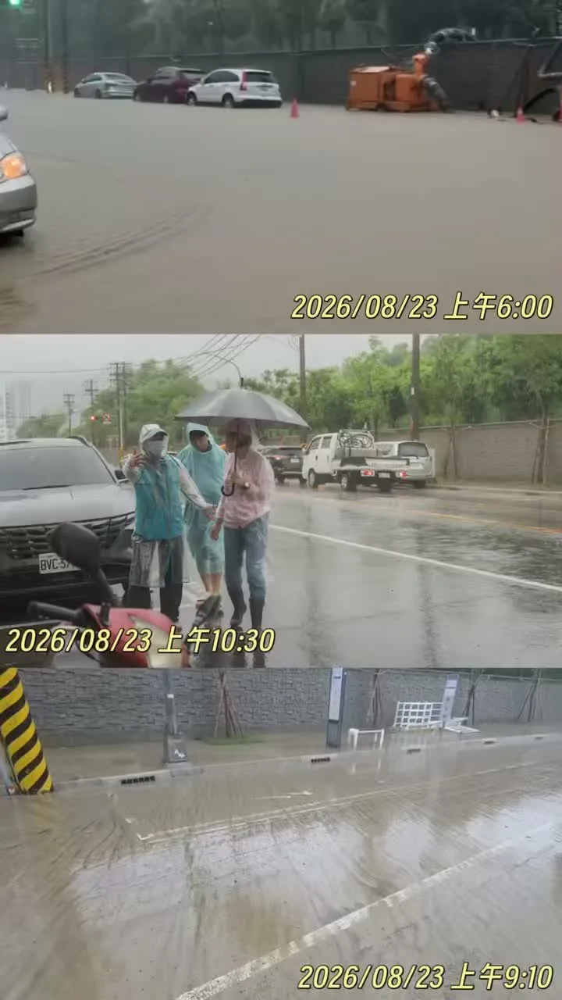
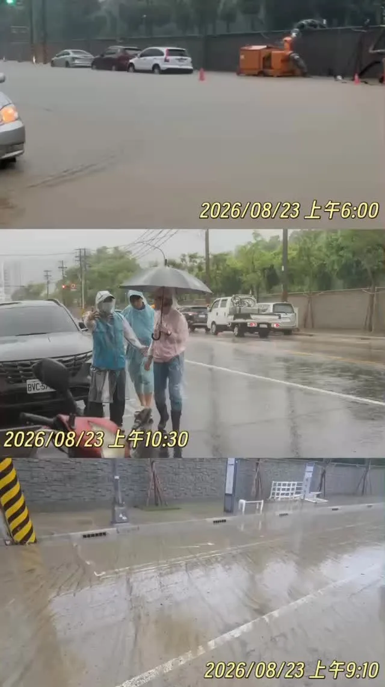
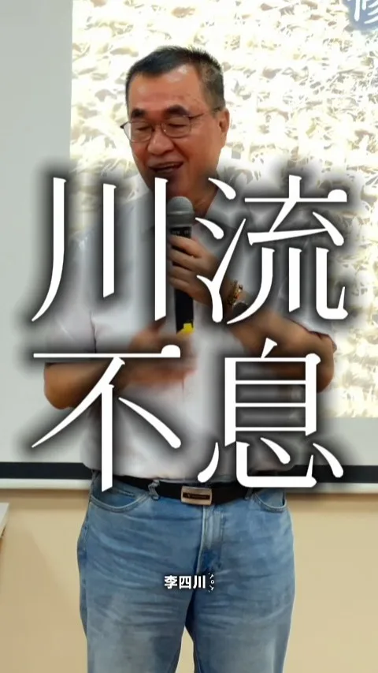

沈伯洋PumaPumaShen

都市微森林政策｜把樹種回來！降溫台北！
Posts
都市微森林政策｜把樹種回來！降溫台北！

@hsiehlungchieh:兩天前，龍介就說過，安南區這場大爆炸，絕對不能只當成一場普通爆炸案處理。現在案情愈查愈深，愈來愈多疑點浮上檯面。 檢方查出，民進黨籍的理想里里長鄭順，涉嫌與楊姓仲介、龔姓男子共同非法堆置廢棄物，三人今天都遭法院裁定羈押禁見。 司法最後怎麼查、怎麼判，我們尊重；但背後到底還有多少人、多少利益關係，一定要繼續查到底。 更奇怪的是，地主說土地十多年來借給里長作為停車場，地主、里長卻都說「不認識」所謂的仲介；另一頭，檢警卻正在追查仲介、租金與相關金流。 龍介就要問：這塊地到底是誰同意拿來堆廢棄物？誰牽線？誰收錢？錢最後流到哪裡？ 含鎂、鋁等危險廢棄物，不是三兩包垃圾，而是一車一車運進住宅區旁邊。附近建案人員甚至曾看到外車進場傾倒、拍下車牌。這麼大的動靜，地方和市府的稽查系統，難道一路都沒人發現、沒人管？ 現在既然連鄭姓里長、業者、仲介都被捲入調查，就不能只抓幾個人交差。廢棄物來源、清運管道、土地關係、背後金流，有沒有形成一整條非法利益鏈，都要查清楚。 司法查刑責，市府就要查行政責任。龍介還是那句話：火可以把垃圾燒掉，不能把責任跟金流一起燒掉。

@prof.kochihen:昨夜一整晚風雨交加，相信許多高雄人都睡得不安穩。今天一早，我與宋立彬議員、方信淵議員、黃韻涵議員參選人以及典寶里長洪文清，一同前往梓官區 典寶里，關心積淹水及清理情形。 昨天大舍南路、嘉展路一帶淹水嚴重，水深一度達到腰部，許多住戶家中一樓進水，家園幾乎泡在水裡；典寶橋也因而封橋。居民無奈地告訴我，去年才淹過，今年又再淹，同樣的場景再次發生，對居民來說，真的不是一句「暴雨」就能帶過的。 目前部分居民家中積水仍未完全退去，昨天雖然有抽水機持續抽水，但因昨天下午至晚間暴雨不斷，加上滿潮與典寶溪水位高漲，抽水效果有限，直至今日上午水才慢慢退去。 眼前除了持續協調國軍等力量協助居民家園清理，更重要的是不能每次大雨來，就只能等著淹水、清理，年復一年。 我認為典寶里長年的問題，必須從整體排水系統著手，檢討水路分流、箱涵及排水容量、以及排水設施老舊問題，找出有效的改善方案。 治水不能只是淹水後再搶救，而是要把問題一次次找出來、逐步改善，降低居民每逢大雨就提心吊膽的風險。

@zenolai:小港火警空品提醒！小港、大寮、鳳山、鳥松朋友請留意防護 小港區稍早發生工廠火警，消防單位正持續搶救中。預估空氣品質受影響的區域，已擴大至小港區、大寮區、鳳山區和鳥松區。 環保局正持續嚴密監測空品變化，請上述區域的市民朋友盡量待在室內、緊閉門窗，如需外出請務必戴好口罩。我會持續緊盯後續處置狀況，請大家務必注意防護和安全。高雄平安！

早上結束海線行程後，我前往 #鼓山 關心災情。豪雨造成鼓山三路靠近桃子園路一帶再度出現黃泥水淹沒路面的情況，影響居民通行。從昨天到今天，類似狀況一再發生，居民也已不堪其擾。 這個地區，我的團隊與蔡金晏、白喬茵議員去年就曾多次會勘並積極爭取設置沉砂滯洪池。凱米、山陀兒颱風期間，因軍方老舊圍牆破損，柴山坡地的黃泥水在豪雨時越區溢淹至美術館周邊。目前已完成843公尺擋土牆重建，改善越區漫淹問題。 但山坡地大量逕流的問題仍未徹底解決。未來將在營區內新設6處攔砂壩及2處沉砂滯洪池，預計今年12月底完工。我也會持續要求國軍做好營區內水土保持，在工程完成前做好應變，避免每逢豪雨就讓泥水再次衝進市區。 根據水利局智慧監測平台，從昨夜到今日，高雄多處傳出積淹水情況。面對後續雨勢，希望能持續精進監測與應變機制，針對容易積淹水的熱點加強抽排水與預警，讓防汛工作更即時、更周全，盡可能降低雨勢對市民生活的影響。 治水不能只看工程有沒有完成，更要看雨來的時候，居民的生活有沒有受到影響。面對極端降雨越來越頻繁，高雄需要把每一次災情都當成檢視治水系統的機會，找出問題、補上缺口。 #高雄 #平安

今天凌晨，安南區一聲大爆炸，造成15人受傷，其中還包括3名消防弟兄，周邊民宅、車輛也受到波及。 龍介先向受傷鄉親，以及徹夜搶救的消防、警察、醫護人員說聲辛苦。該安置、該協助求償的，市府都要馬上做；但救災之外，這件事絕對不能只當成一場普通火警。 目前查到，地主原本是借地作停車場，後來卻有人把含鋁、鎂、廢油等廢棄物運進來堆置；涉案高雄業者還沒有任何廢棄物清理證照。更離譜的是，這些廢棄物到底從哪裡來、誰負責清運、業者跟現場是什麼關係，到現在都還沒有查清楚。 龍介要問：這麼危險的東西，怎麼可以一路進到住宅區旁，堆到爆炸了，政府才知道？ 而且，這已經不是第一次。去年後壁烏樹林、城西垃圾場大火，到8月七股、將軍光電案場又接連起火，廢棄物、太陽能板相關資材燒成一片；現在安南又炸出非法廢棄物堆置場。事情一件接一件，台南的環保治理，真的只是「差」而已嗎？ 怎麼一碰到大量廢棄物，最後常常都是一把火？龍介不是斷言有人縱火，但檢警、調查單位真的要把眉角看清楚。廢棄物來源、清運業者、土地、仲介、金流，背後有沒有一整條非法利益鏈，全部都要查到底！ 火可以把垃圾燒掉，不能把證據、責任跟背後的利益關係一起燒掉。 台南人的土地，不是黑心業者的垃圾場；台南人的安全，更不能靠運氣。

@prof.kochihen:近日高雄豪雨不斷，趁著行程空檔，特別趕赴仁武區赤山里，關心地方積淹水情況，也與謝青原里長一同前往仁雄橋，了解曹公新圳排水情形。 謝里長表示，昨晚起里內陸續出現排水不及、積淹水情況，所幸即時反映處理，加上今早雨勢稍緩，積水已陸續排除。 另外，澄清湖原博館基地每逢大雨就有黃泥水流出，造成居民困擾，我也會向原民會反映，協助地方尋求改善。 雨勢仍可能持續，請大家做好防雨、防淹水準備，非必要盡量減少外出，平安最重要。

倒數99天！商圈復興與產業轉型的三大願景 看著一些曾經繁華的街道逐漸冷清，許多高雄鄉親都感到可惜。高雄有很大的發展潛力，城市的繁榮也不該只集中在少數地區。要讓商圈重新熱鬧、產業持續升級，就要從空間活化、城市再生與產業轉型三個方向一起推動。 一、舊商圈大復活，讓特色商店進駐點亮老街區 成立「復興高雄經濟媒合平台」，全面盤點舊市區的閒置店面與市場，透過租稅減免與租金補貼，媒合創業者及關鍵商家以合理租金進駐，讓年輕人的創意走進老商圈。 減少閒置空間只是第一步，更重要的是把人潮與商機帶回來，讓一間間閒置店面重新開門，讓一條條街道重新熱鬧起來。 二、車站舊城華麗再生，讓綠廊串聯城市商業機能 高雄車站周邊即將迎來新的發展契機，將引進A級商辦與國際飯店，搭配青年創業獎勵金，打造老店傳承、新創孵化的優質環境。 同時推動舊城再生計畫，以高雄車站為重要樞紐，善用既有的台鐵地下化綠園道，串聯鼓山、鹽埕、三民到鳳山的商業動能。讓都市綠廊不只是休憩空間，更成為串聯生活、商業與觀光的重要廊道，讓人潮沿著綠廊走進城市，也讓繁榮走進每一個巷弄。 三、服務業億元轉型，成為中小企業最強後盾 高雄的服務業也要升級。推動「服務業億元轉型計畫」，投入資源陪伴中小企業進行數位轉型，成立「數位轉型輔導小組」，結合產官學力量，協助企業導入智慧化系統。 加速引進AI、雲端等科技，發展智慧醫療、遠距教育、智慧物流等新型態服務業，創造更多高薪工作機會；鼓勵在地業者異業結盟，打造一站式電商平台，把高雄品牌推向國際。 同時協助企業引進、培訓數位人才，鼓勵學校師生團隊投入創業，成為企業轉型的重要夥伴，從資金、人才到法規提供完整支持，讓民間的創意成為高雄產業升級的最大動能。 高雄的繁榮，要從每一個商圈開始，也要從每一個產業升級。 讓舊商圈重新熱鬧、讓舊城區重新發光、讓中小企業找到新的成長機會，才能讓人潮回來、商機回來、年輕人留下來。

大家早安☀️一早來到力行市場，感謝攤商和鄉親朋友給我親切的問候、熱情的加油打氣，讓原本忙碌的早晨，多一份溫暖，也讓我聽見在地最真實的聲音。 對力行市場周邊來說，由於捷運綠線工期延宕，導致捷運G09站啟用遙遙無期，市府這三年來沒有積極推進，讓工期不斷延宕，也讓深陷交通黑暗期的民眾苦不堪言。 市府應該提前思考，未來捷運啟用後，勢必會改變附近的交通與生活型態，將來環境改善、交通動線、行人環境、大眾運輸接駁及市場整建問題，市府必須做好通盤規劃，和市民朋友做好溝通。 很多在地的好朋友，也跟我反映對垃圾費隨袋徵收政策的憂心，我要再次向大家承諾，在配套措施尚未完善、未充分取得市民共識前，我絕不會貿然推動垃圾費隨袋徵收。 感謝 李光達議員（桃園區）議員、黃家齊議員、黃瓊慧 桃園觀察日記議員、 桃園媽媽-李柏瑟議員候選人、東埔里江慶尚里長、桃園市家畜肉類同業公會黃省祺理事長陪同前行，讓早晨充滿溫暖！ 大家的聲音，世杰都放在心上。我會和大家站在一起，為桃園打拚努力，讓我們的家更好！讓心桃園，動起來💖


說實在，房子可以等，人不能等。 我走了新北 29 個區。聽到最多的大概是這幾句——房子老了想都更，不知道從哪裡開始；社區想重建，卡在整合、卡在法規、卡在容積；住在危險老屋裡面的，每天提心吊膽。 新北 400 多萬人，全台灣人口最多。房子老了，住在裡面的人也老了。 這幾年侯市長推都更三箭，新北的底子已經打起來了。下一步，我想再往前一步——讓市府從「審都更」，變成「幫都更」。 我提出「都更5夠力」： 📍第一力｜府級整合 成立府級「都更推動委員會」，市長自己當召集人。城鄉、工務、交通、捷運、地政，通通拉進來一次協調。都更不能再只是局處的事。 📍第二力｜容積檢討 新北很多都市計畫，是幾十年前訂的。那時候的捷運、人口、產業，跟現在都不一樣。容積要全面重新檢討，成長的紅利要回到城市、回到市民。 📍第三力｜防災優先 成立「危險建築單一服務窗口」。評估鑑定、法令諮詢、整合重建，市府幫忙處理，評估費用市府補助。防災型都更 2.0 再升級，符合條件的，總容積最高可以到法定容積的兩倍。侯市長任內推動的主幹道沿線都更，我會繼續做下去。 📍第四力｜防洪韌性 過去講防災，大概都在講防震。但這幾年的雨，大家心裡都有數。滯洪、防洪設施要納進都更獎勵機制，易淹水的老市區，市府的公有地先做示範。 📍第五力｜以地易地 在侯市長都更二箭 2.0 的基礎上，建立「都更容積調派平台」。基地太小、卡住動不了的，由平台預審、幫忙媒合實施者。容積移出捐給市府的土地，優先變成公園、停車場、滯洪設施。 在我們都更政策記者會，建築師汪俊男、估價師莊濰銓、里長聯誼總會總會長許承煬都來了。許總會長講一句話我很認同：都更的速度一定要快，居住安全才顧得住。 年底如果有機會回到新北，這五件事，我想一件一件把它做起來。 做工程的人最怕一件事——圖畫得漂亮，做不出來。 該做的，就一件一件做。

何欣純提「雙十生活圈」 打造 10 分鐘綠蔭、遊戲圈 台中市長候選人、立法委員何欣純與還我特色 […] 〈 何欣純提「雙十生活圈」 打造 10 分鐘綠蔭、遊戲圈 〉這篇文章最早發佈於《 何欣純官方網站｜2026 台中市長候選人 》。

兩天前，龍介就說過，安南區這場大爆炸，絕對不能只當成一場普通爆炸案處理。現在案情愈查愈深，愈來愈多疑點浮上檯面。 檢方查出，民進黨籍的理想里里長鄭順，涉嫌與楊姓仲介、龔姓男子共同非法堆置廢棄物，三人今天都遭法院裁定羈押禁見。 司法最後怎麼查、怎麼判，我們尊重；但背後到底還有多少人、多少利益關係，一定要繼續查到底。 更奇怪的是，地主說土地十多年來借給里長作為停車場，地主、里長卻都說「不認識」所謂的仲介；另一頭，檢警卻正在追查仲介、租金與相關金流。 龍介就要問：這塊地到底是誰同意拿來堆廢棄物？誰牽線？誰收錢？錢最後流到哪裡？ 含鎂、鋁等危險廢棄物，不是三兩包垃圾，而是一車一車運進住宅區旁邊。附近建案人員甚至曾看到外車進場傾倒、拍下車牌。這麼大的動靜，地方和市府的稽查系統，難道一路都沒人發現、沒人管？ 現在既然連鄭姓里長、業者、仲介都被捲入調查，就不能只抓幾個人交差。廢棄物來源、清運管道、土地關係、背後金流，有沒有形成一整條非法利益鏈，都要查清楚。 司法查刑責，市府就要查行政責任。龍介還是那句話：火可以把垃圾燒掉，不能把責任跟金流一起燒掉。

@zenolai:離開田寮後，接著和 @einn.chiu 委員、經濟部 #賴建信 次長來到阿蓮玉庫社區活動中心，聽取地方及鄉親反映，並走進附近家戶，實際了解居民生活受到的影響。 這波強降雨來得又快又集中，我已請相關單位逐戶確認受影響情形，住家排水、環境清理及其他生活需求，都要儘快協助。 市府已調派抽水機加速排水，現有部分設備也要加快汰換。後續我會持續向中央爭取經費及設備，強化地方抽排水能力。

大寮永芳里淹成一片汪洋，柯志恩：治水不能只停留在預算數字。立即向中央及地方政府反映，讓淹水不再成為大寮人的日常。#柯志恩 #淹水 #高雄 #大寮 #勘災

早上結束海線行程後，我前往 #鼓山 關心災情。豪雨造成鼓山三路靠近桃子園路一帶再度出現黃泥水淹沒路面的情況，影響居民通行。從昨天到今天，類似狀況一再發生，居民也已不堪其擾。 這個地區，我的團隊與蔡金晏、白喬茵議員去年就曾多次會勘並積極爭取設置沉砂滯洪池。凱米、山陀兒颱風期間，因軍方老舊圍牆破損，柴山坡地的黃泥水在豪雨時越區溢淹至美術館周邊。目前已完成843公尺擋土牆重建，改善越區漫淹問題。 但山坡地大量逕流的問題仍未徹底解決。未來將在營區內新設6處攔砂壩及2處沉砂滯洪池，預計今年12月底完工。我也會持續要求國軍做好營區內水土保持，在工程完成前做好應變，避免每逢豪雨就讓泥水再次衝進市區。 根據水利局智慧監測平台，從昨夜到今日，高雄多處傳出積淹水情況。面對後續雨勢，希望能持續精進監測與應變機制，針對容易積淹水的熱點加強抽排水與預警，讓防汛工作更即時、更周全，盡可能降低雨勢對市民生活的影響。 治水不能只看工程有沒有完成，更要看雨來的時候，居民的生活有沒有受到影響。面對極端降雨越來越頻繁，高雄需要把每一次災情都當成檢視治水系統的機會，找出問題、補上缺口。 #高雄 #平安


暑假七場 #水獺媽媽樂園 圓滿成功！我們萬聖節再見🧡 今天我們在土城舉辦了今年暑假最後一場「水獺媽媽樂園」，水獺媽媽我真的很高興，從板橋、林口、淡水、汐止、鶯歌、中和到土城，每一場都有上千組的親子家庭和我們一起學習、一起玩。 我也和大家分享，未來我們還要舉辦「萬聖節特別場」！🧚♀️🧛🎃 創立「#水獺媽媽巧巧話」Podcast頻道六年多以來，我希望透過故事，陪伴孩子快樂成長，也給平時辛苦照顧孩子的家長放鬆與喘息的空間。 今年暑假，我們特別設計寓教於樂的闖關活動，引導孩子一步步練習 #防災準備、#環境保護、#資訊識讀，也更 #認識自己和新北。 「做中玩、玩中學」就是水獺媽媽樂園的精神，未來我們會繼續推出更多兼具創意與教育意義的親子活動，希望讓新北變得更有趣、更好玩！

早期農夫家人會先在家裡準備好午餐，送到田邊讓大家一起享用，稱作「割稻仔飯 」，是台灣農村珍貴的生活文化。 參加「大里竹仔坑社區發展協會」所舉辦「小小農夫大冒險」親子食農教育體驗，帶著孩子認識早期農村生活，也學習珍惜食物、土地與農民的辛勞。 孩子是城市的下一代，希望他們從小認識土地、親近農村，在體驗中學會珍惜與感恩，讓這些珍貴的農村文化一代一代傳下去。

@schuanglawyer:大家早安☀️一早來到力行市場，感謝攤商和鄉親朋友給我親切的問候、熱情的加油打氣，讓原本忙碌的早晨，多一份溫暖，也讓我聽見在地最真實的聲音。 對力行市場周邊來說，由於捷運綠線工期延宕，導致捷運G09站啟用遙遙無期，市府這三年來沒有積極推進，讓工期不斷延宕，也讓深陷交通黑暗期的民眾苦不堪言。 市府應該提前思考，未來捷運啟用後，勢必會改變附近的交通與生活型態，將來環境改善、交通動線、行人環境、大眾運輸接駁及市場整建問題，市府必須做好通盤規劃，和市民朋友做好溝通。 很多在地的好朋友，也跟我反映對垃圾費隨袋徵收政策的憂心，我要再次向大家承諾，在配套措施尚未完善、未充分取得市民共識前，我絕不會貿然推動垃圾費隨袋徵收。 大家的聲音，世杰都放在心上。我會和大家站在一起，為桃園打拚努力，讓我們的家更好！讓心桃園，動起來💖

做農民的靠山，做高雄農產的推銷員！ 繼日前拜訪田寮農會後，我持續深入基層，今天來到燕巢農會，傾聽農民最真實的聲音，也更深刻感受到，農業發展不能只靠農民單打獨鬥，而是需要政府成為最堅強的後盾。 大家都說，農人的宿命是「看天吃飯」。有時大旱、有時豪雨成災，農田耕作充滿不可預期的變數，但即便如此，大家依然一棵一棵扶正、一畝一畝用心施肥灌溉；除了期待豐收，我想，更是因為對這片土地有著深厚的感情，正因為這份堅持，更讓人覺得這麼好的農產品，應該被更多人看見、被更多人喜歡。 這段時間走訪農會與地方座談，我也聽見許多農民朋友共同關心的問題，包括農會建物老化修繕、猴群滋擾造成農損、偏遠地區遭濫倒廢棄物、灌溉水源不足、自來水濁水問題，以及保安林限制影響地方發展等。這些看似零碎的問題，其實都直接關係到農民的生活品質與農業競爭力。除了持續向相關單位反映、爭取改善，未來我也將從三大方向全力協助燕巢農業發展： 1、打造在地品牌，讓「燕巢」成為品質保證的代名詞，提升農產品辨識度與附加價值，讓好產品不再只能賣原料價格。 2、健全冷鏈物流，爭取建置冷鏈包裝與運輸系統，依照不同農產品需求做好溫控，讓燕巢農產維持最佳品質，拓展國內外市場。 3、補足農業人力，邁向智慧農業，推動農會統一聘僱移工，依照產季做季節性的人力調度，讓小農也能得到實質幫助；同時鼓勵青年返鄉，並同步輔導農戶引進自動化設備。燕巢缺的不只是工人，更要用自動化機具補足對勞動力的依賴，未來讓人力僅作為「輔佐」，讓燕巢這個地方更加智慧化。 此外，我也會持續為提高老農津貼努力，主張調升至15,000元，並建立定期檢討機制，讓辛苦一輩子的農民獲得更好的保障；同時強化長輩照顧，提高敬老卡點數、擴大使用範圍，讓福利照顧也能帶動農會與在地產業。 好的 #農業 政策，不只是 #農產品 種得好、賣得出去，更重要的是 #農民 能不能真正賺得到錢、過得更安心。 未來，我會繼續做大家的靠山，也做燕巢最認真的推銷員，讓更多人看見燕巢三寶、看見高雄農業的價值與驕傲，一起把燕巢最好的農產，風風光光推向全世界！
@hammer__lee:今天 蔣萬安 市長提到「川流不息」。 說實在，我名字裡剛好有一條川，新北起碼有四條。 淡水河、新店溪、大漢溪、基隆河，二十九區是這幾條河串起來的。 新店溪，我們幫毛蟹做了越堤設施，牠們才過得去。基隆河的鸕鶿，每年冬天飛回來。大漢溪上面架著新月橋。 這些河不是風景，是新北人的生活。 上週末，三重跟大稻埕的煙火，把淡水河兩岸都點亮了。我跟蔣市長隔著淡水河連線，講好以後雙北一起跨河辦活動。 因為淡水河從來沒有把雙北分開。我跟蔣市長要做的，是讓這條河變成連結，不是邊界。 生活圈連起來、通勤變順、兩岸一起變漂亮——這些才是雙北共治能做的事。 熱鬧會散，河不會。 把事情做對，人潮自然會來。

先前走進中央公園，了解 還我特色公園行動聯盟（特公盟） 歷時三年推動的 #飛行美樂地 成果，讓我想起過去舉辦多場的 #親子童樂列車 活動，看到孩子開心遊戲，就是身為大人最驕傲的事，也讓我更確信台中需要為下一代創造更多安全友善的遊憩空間。 這次我也和特公盟及親子代表交流，並簽署「遊戲宜居城市」政見承諾書，提出三項具體承諾： ✅打造十分鐘遊戲圈 盤點大台中29區遊憩空間分布，找出資源不足的生活圈，優先新設或改善遊戲場，並依幼兒、兒童等不同年齡需求推動分齡設計，讓大家步行十分鐘就可以到達優質的遊戲空間。 ✅啟動遊戲場降溫 新建或改建遊戲場時優先採用自然鋪面及自然遮蔭，增加樹蔭、遮陽與戲水設施，改善遊具及座椅曝曬燙手等問題，搭配我先前提出「2030綠蔭倍增計畫」及「10分鐘綠蔭生活圈」，讓孩子在炎熱季節也能安心外出遊玩。 ✅增加青少年戶外遊憩空間 全面盤點升級特色公園、青少年活動和社區遊戲空間，補足長期不足的青少年戶外遊憩空間，提供社交互動及挑戰身體能力的免費休憩場域 孩子的快樂，就是城市進步最直接的證明，未來我繼續把孩子的需求放進城市規劃，打造全齡共享、欣欣向榮的遊憩宜居台中。 #心存大台中 #市長換欣_台中創新

兩天前，龍介就說過，安南區這場大爆炸，絕對不能只當成一場普通爆炸案處理。現在案情愈查愈深，愈來愈多疑點浮上檯面。 檢方查出，民進黨籍的理想里里長鄭順，涉嫌與楊姓仲介、龔姓男子共同非法堆置廢棄物，三人今天都遭法院裁定羈押禁見。 司法最後怎麼查、怎麼判，我們尊重；但背後到底還有多少人、多少利益關係，一定要繼續查到底。 更奇怪的是，地主說土地十多年來借給里長作為停車場，地主、里長卻都說「不認識」所謂的仲介；另一頭，檢警卻正在追查仲介、租金與相關金流。 龍介就要問：這塊地到底是誰同意拿來堆廢棄物？誰牽線？誰收錢？錢最後流到哪裡？ 含鎂、鋁等危險廢棄物，不是三兩包垃圾，而是一車一車運進住宅區旁邊。附近建案人員甚至曾看到外車進場傾倒、拍下車牌。這麼大的動靜，地方和市府的稽查系統，難道一路都沒人發現、沒人管？ 現在既然連鄭姓里長、業者、仲介都被捲入調查，就不能只抓幾個人交差。廢棄物來源、清運管道、土地關係、背後金流，有沒有形成一整條非法利益鏈，都要查清楚。 司法查刑責，市府就要查行政責任。龍介還是那句話：火可以把垃圾燒掉，不能把責任跟金流一起燒掉。

昨夜一整晚風雨交加，相信許多高雄人都睡得不安穩。今天一早，我與宋立彬議員、方信淵議員、黃韻涵議員參選人以及典寶里長洪文清，一同前往 #梓官區 典寶里，關心積淹水及清理情形。 昨天大舍南路、嘉展路一帶淹水嚴重，水深一度達到腰部，許多住戶家中一樓進水，家園幾乎泡在水裡；典寶橋也因而封橋。居民無奈地告訴我，去年才淹過，今年又再淹，同樣的場景再次發生，對居民來說，真的不是一句「暴雨」就能帶過的。 目前部分居民家中積水仍未完全退去，昨天雖然有抽水機持續抽水，但因昨天下午至晚間暴雨不斷，加上滿潮與典寶溪水位高漲，抽水效果有限，直至今日上午水才慢慢退去。 眼前除了持續協調國軍等力量協助居民家園清理，更重要的是不能每次大雨來，就只能等著淹水、清理，年復一年。 我認為典寶里長年的問題，必須從整體排水系統著手，檢討水路分流、箱涵及排水容量、以及排水設施老舊問題，找出有效的改善方案。 治水不能只是淹水後再搶救，而是要把問題一次次找出來、逐步改善，降低居民每逢大雨就提心吊膽的風險。

@prof.kochihen:早上結束海線行程後，我前往鼓山關心災情。豪雨造成鼓山三路靠近桃子園路一帶再度出現黃泥水淹沒路面的情況，影響居民通行。從昨天到今天，類似狀況一再發生，居民也已不堪其擾。 這個地區，我的團隊與蔡金晏、白喬茵議員去年就曾多次會勘並積極爭取設置沉砂滯洪池。凱米、山陀兒颱風期間，因軍方老舊圍牆破損，柴山坡地的黃泥水在豪雨時越區溢淹至美術館周邊。目前已完成843公尺擋土牆重建，改善越區漫淹問題。 但山坡地大量逕流的問題仍未徹底解決。未來將在營區內新設6處攔砂壩及2處沉砂滯洪池，預計今年12月底完工。我也會持續要求國軍做好營區內水土保持，在工程完成前做好應變，避免每逢豪雨就讓泥水再次衝進市區。 根據水利局智慧監測平台，從昨夜到今日，高雄多處傳出積淹水情況。面對後續雨勢，希望能持續精進監測與應變機制，針對容易積淹水的熱點加強抽排水與預警，讓防汛工作更即時、更周全，盡可能降低雨勢對市民生活的影響。 治水不能只看工程有沒有完成，更要看雨來的時候，居民的生活有沒有受到影響。面對極端降雨越來越頻繁，高雄需要把每一次災情都當成檢視治水系統的機會，找出問題、補上缺口。
@hsiehlungchieh:今天凌晨，安南區一聲大爆炸，造成15人受傷，其中還包括3名消防弟兄，周邊民宅、車輛也受到波及。 龍介先向受傷鄉親，以及徹夜搶救的消防、警察、醫護人員說聲辛苦。該安置、該協助求償的，市府都要馬上做；但救災之外，這件事絕對不能只當成一場普通火警。 目前查到，地主原本是借地作停車場，後來卻有人把含鋁、鎂、廢油等廢棄物運進來堆置；涉案高雄業者還沒有任何廢棄物清理證照。更離譜的是，這些廢棄物到底從哪裡來、誰負責清運、業者跟現場是什麼關係，到現在都還沒有查清楚。 龍介要問：這麼危險的東西，怎麼可以一路進到住宅區旁，堆到爆炸了，政府才知道？ 而且，這已經不是第一次。去年後壁烏樹林、城西垃圾場大火，到8月七股、將軍光電案場又接連起火，廢棄物、太陽能板相關資材燒成一片；現在安南又炸出非法廢棄物堆置場。事情一件接一件，台南的環保治理，真的只是「差」而已嗎？ 怎麼一碰到大量廢棄物，最後常常都是一把火？龍介不是斷言有人縱火，但檢警、調查單位真的要把眉角看清楚。廢棄物來源、清運業者、土地、仲介、金流，背後有沒有一整條非法利益鏈，全部都要查到底！

暑假七場 #水獺媽媽樂園 圓滿成功！我們萬聖節再見🧡 今天我們在土城舉辦了今年暑假最後一場「水獺媽媽樂園」，水獺媽媽我真的很高興，從板橋、林口、淡水、汐止、鶯歌、中和到土城，每一場都有上千組的親子家庭和我們一起學習、一起玩。 我也和大家分享，未來我們還要舉辦「萬聖節特別場」！🧚♀️🧛🎃 創立「#水獺媽媽巧巧話」Podcast頻道六年多以來，我希望透過故事，陪伴孩子快樂成長，也給平時辛苦照顧孩子的家長放鬆與喘息的空間。 今年暑假，我們特別設計寓教於樂的闖關活動，引導孩子一步步練習 #防災準備、#環境保護、#資訊識讀，也更認識自己和新北。 「做中玩、玩中學」就是水獺媽媽樂園的精神，未來我們會繼續推出更多兼具創意與教育意義的親子活動，希望讓新北變得更有趣、更好玩！

倒數99天！商圈復興與產業轉型的三大願景 看著一些曾經繁華的街道逐漸冷清，許多高雄鄉親都感到可惜。高雄有很大的發展潛力，城市的繁榮也不該只集中在少數地區。要讓商圈重新熱鬧、產業持續升級，就要從空間活化、城市再生與產業轉型三個方向一起推動。 一、舊商圈大復活，讓特色商店進駐點亮老街區 成立「復興高雄經濟媒合平台」，全面盤點舊市區的閒置店面與市場，透過租稅減免與租金補貼，媒合創業者及關鍵商家以合理租金進駐，讓年輕人的創意走進老商圈。 減少閒置空間只是第一步，更重要的是把人潮與商機帶回來，讓一間間閒置店面重新開門，讓一條條街道重新熱鬧起來。 二、車站舊城華麗再生，讓綠廊串聯城市商業機能 高雄車站周邊即將迎來新的發展契機，將引進A級商辦與國際飯店，搭配青年創業獎勵金，打造老店傳承、新創孵化的優質環境。 同時推動舊城再生計畫，以高雄車站為重要樞紐，善用既有的台鐵地下化綠園道，串聯鼓山、鹽埕、三民到鳳山的商業動能。讓都市綠廊不只是休憩空間，更成為串聯生活、商業與觀光的重要廊道，讓人潮沿著綠廊走進城市，也讓繁榮走進每一個巷弄。 三、服務業億元轉型，成為中小企業最強後盾 高雄的服務業也要升級。推動「服務業億元轉型計畫」，投入資源陪伴中小企業進行數位轉型，成立「數位轉型輔導小組」，結合產官學力量，協助企業導入智慧化系統。 加速引進AI、雲端等科技，發展智慧醫療、遠距教育、智慧物流等新型態服務業，創造更多高薪工作機會；鼓勵在地業者異業結盟，打造一站式電商平台，把高雄品牌推向國際。 同時協助企業引進、培訓數位人才，鼓勵學校師生團隊投入創業，成為企業轉型的重要夥伴，從資金、人才到法規提供完整支持，讓民間的創意成為高雄產業升級的最大動能。 高雄的繁榮，要從每一個商圈開始，也要從每一個產業升級。 讓舊商圈重新熱鬧、讓舊城區重新發光、讓中小企業找到新的成長機會，才能讓人潮回來、商機回來、年輕人留下來。

大家早安☀️一早來到力行市場，感謝攤商和鄉親朋友給我親切的問候、熱情的加油打氣，讓原本忙碌的早晨，多一份溫暖，也讓我聽見在地最真實的聲音。 對力行市場周邊來說，由於捷運綠線工期延宕，導致捷運G09站啟用遙遙無期，市府這三年來沒有積極推進，讓工期不斷延宕，也讓深陷交通黑暗期的民眾苦不堪言。 市府應該提前思考，未來捷運啟用後，勢必會改變附近的交通與生活型態，將來環境改善、交通動線、行人環境、大眾運輸接駁及市場整建問題，市府必須做好通盤規劃，和市民朋友做好溝通。 很多在地的好朋友，也跟我反映對垃圾費隨袋徵收政策的憂心，我要再次向大家承諾，在配套措施尚未完善、未充分取得市民共識前，我絕不會貿然推動垃圾費隨袋徵收。 感謝李光達議員 @lee_kung_da 、黃家齊議員 @jack790218 、黃瓊慧議員 @qn_taiwan 、李柏瑟議員候選人 @leeposhe_taoyuanmama 、東埔里江慶尚里長、桃園市家畜肉類同業公會黃省祺理事長陪同前行，讓早晨充滿溫暖！ 大家的聲音，世杰都放在心上。我會和大家站在一起，為桃園打拚努力，讓我們的家更好！讓心桃園，動起來💖

做農民的靠山，做高雄農產的推銷員！ 繼日前拜訪田寮農會後，我持續深入基層，今天來到燕巢農會，傾聽農民最真實的聲音，也更深刻感受到，農業發展不能只靠農民單打獨鬥，而是需要政府成為最堅強的後盾。 大家都說，農人的宿命是「看天吃飯」。有時大旱、有時豪雨成災，農田耕作充滿不可預期的變數，但即便如此，大家依然一棵一棵扶正、一畝一畝用心施肥灌溉；除了期待豐收，我想，更是因為對這片土地有著深厚的感情，正因為這份堅持，更讓人覺得這麼好的農產品，應該被更多人看見、被更多人喜歡。 這段時間走訪農會與地方座談，我也聽見許多農民朋友共同關心的問題，包括農會建物老化修繕、猴群滋擾造成農損、偏遠地區遭濫倒廢棄物、灌溉水源不足、自來水濁水問題，以及保安林限制影響地方發展等。這些看似零碎的問題，其實都直接關係到農民的生活品質與農業競爭力。除了持續向相關單位反映、爭取改善，未來我也將從三大方向全力協助燕巢農業發展： 1、打造在地品牌，讓「燕巢」成為品質保證的代名詞，提升農產品辨識度與附加價值，讓好產品不再只能賣原料價格。 2、健全冷鏈物流，爭取建置冷鏈包裝與運輸系統，依照不同農產品需求做好溫控，讓燕巢農產維持最佳品質，拓展國內外市場。 3、補足農業人力，邁向智慧農業，推動農會統一聘僱移工，依照產季做季節性的人力調度，讓小農也能得到實質幫助；同時鼓勵青年返鄉，並同步輔導農戶引進自動化設備。燕巢缺的不只是工人，更要用自動化機具補足對勞動力的依賴，未來讓人力僅作為「輔佐」，讓燕巢這個地方更加智慧化。 此外，我也會持續為提高老農津貼努力，主張調升至15,000元，並建立定期檢討機制，讓辛苦一輩子的農民獲得更好的保障；同時強化長輩照顧，提高敬老卡點數、擴大使用範圍，讓福利照顧也能帶動農會與在地產業。 好的 #農業 政策，不只是 #農產品 種得好、賣得出去，更重要的是 #農民 能不能真正賺得到錢、過得更安心。 未來，我會繼續做大家的靠山，也做燕巢最認真的推銷員，讓更多人看見燕巢三寶、看見高雄農業的價值與驕傲，一起把燕巢最好的農產，風風光光推向全世界！

今天 蔣萬安 @wanan.chiang 市長提到「川流不息」。 說實在，我名字裡剛好有一條川，新北起碼有四條。 淡水河、新店溪、大漢溪、基隆河，二十九區是這幾條河串起來的。 新店溪，我們幫毛蟹做了越堤設施，牠們才過得去。基隆河的鸕鶿，每年冬天飛回來。大漢溪上面架著新月橋。 這些河不是風景，是新北人的生活。 上週末，三重跟大稻埕的煙火，把淡水河兩岸都點亮了。我跟蔣市長隔著淡水河連線，講好以後雙北一起跨河辦活動。 因為淡水河從來沒有把雙北分開。我跟蔣市長要做的，是讓這條河變成連結，不是邊界。 生活圈連起來、通勤變順、兩岸一起變漂亮——這些才是雙北共治能做的事。 熱鬧會散，河不會。 把事情做對，人潮自然會來。